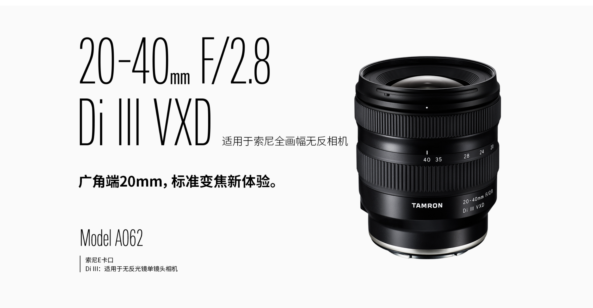

TAMRON 20-40mm F2.8 Di III VXD A062_by SonyAlphaBlog
源：https://sonyalpha.blog/2022/11/20/tamron-20-40mm-f2-8-di-iii-vxd/
1 结论
TAMRON 20-40mm F2.8 Di III VXD（\(5280_{TB,20221125}\)）是一支标准变焦镜头，非常适合Vlog拍摄，对于主拍街拍、建筑、风光以及少量人像的使用场景非常契合。搭配TAMRON 35-150mm F2-2.8 Di III VXD是非常理想的组合。

腾龙2040的性能表现总的来说非常不错。锐度表现可达Very Good，尤其是20mm焦段的表现；尽管无法达到Excellent级别，40mm光圈全开的边角有一点锐度损失。最佳光圈为F5.6。背景虚化、焦外光斑、色彩还原度都有非常不错的表现。
图像可通过Lightroom自动矫正畸变和暗角。抗眩光表现比较一般。
竞品方面，腾龙2040并没有可直接比较的替代品；较为接近的是
- \(\mathbf{SONY}\) FE PZ 16-35mm F4 G
- 性能（锐度、人体工学设计等）表现优异，焦端范围更广但没有F2.8大光圈
- 腾龙双定焦组合
- TAMRON 20mm F/2.8 Di III OSD M1:2 F050（\(2280_{TB,20221125}\)）
- TAMRON 35mm F/2.8 Di III OSD M1:2 F053（\(1550_{TB,20221125}\)）
- 锐度表现优异
- 索尼双定焦组合
- \(\mathbf{SONY}\) FE 24mm F2.8 G（\(4399_{\mathbf{SONY},20221215}\)）
- \(\mathbf{SONY}\) FE 40mm F2.5 G（\(4399_{\mathbf{SONY},20221215}\)）
- 锐度、色彩还原度、自动对焦速度表现优异，拍摄场景上稍微受限
腾龙2040只适合同时需要这个特定焦段的变焦、F2.8大光圈的使用场景；其在A7M4上的表现要优于在A7R5的表现。
- 优势
- 非常独特的变焦范围
- 20mm端中心锐度，光圈全开可达到Very Good级别，最高可达到Excellent级别
- 20mm端总体都有Very Good级别的锐度
- 40mm端在F5.6可达到Very Good锐度表现
- 柔和的背景虚化
- 非常不错的色彩还原度
- 对于F2.8的变焦来说，非常紧凑，非常轻巧
- 不错的做工
- 畸变和暗角表现一般，但在Lightroom可自动矫正
- 色散很小
- 呼吸效应比较小
- 非常小的慧差
- 自动对焦表现非常不错
- 可用TAMRON Lens Utility自定义对焦环
- 防尘防滴溅
- 一般
- 没有镜身按钮
- 抗眩光
- 40mm端光圈全开时变焦锐度只有Average级别
- 价格
- 缺点
- 无
2 总体性能
2.1 简介
TAMRON 20-40mm F2.8 Di III VXD（\(5280_{TB,20221125}\)）是一支标准变焦镜头，非常适合Vlog拍摄，对于主拍街拍、建筑、风光以及少量人像的使用场景非常契合。搭配TAMRON 35-150mm F2-2.8 Di III VXD是非常理想的组合。
2.2 SPEC
- 重量：365g
- 价格：\(5280_{TB,20221125}\)
- 长度：86.5mm
- 滤镜尺寸：67mm
- 直径：74.4mm
- 9片光圈叶片
- 最近对焦距离：17-29cm
- 花瓣形遮光罩
- 连接TAMRON Lens Utility的USB Type-C接口
- 防尘防滴溅
腾龙2040外观设计看上去就像是新旧腾龙镜头的混合体。做工不错，可用于固件更新和功能键设置的USB Type-C接口，但是没有AF/MF切换按钮或者模式切换按钮。
腾龙2040给人最大的惊喜其实是其紧凑的设计——86mm的长度和365g的重量，相对于\(\mathbf{SONY}\)的1635 GM（121mm，686g）和腾龙自家的1728（99mm，420g）都非常紧凑轻巧。这支镜头非常适合上稳定器。
腾龙的TAMRON Lens Utility软件除了固件更新外，还给镜头一定的自定义空间，允许你调整对焦环方向和线性度。
2.3 自动对焦性能
自动对焦性能在运动摄影上总体还是不错的，能有70%的准确率。腾龙2040使用与TAMRON 70-180mm F2.8 Di III VXD相同的VXD电机。但在自动对焦这上面，还是索尼原厂的镜头更有优势。
但是这只镜头真的是给对自动对焦非常看重的运动摄影准备的吗？好想并不是。
3 光学性能
3.1 锐度
- 测试使用6100万像素的\(\mathbf{SONY}\) A7R4。
- 中心锐度上，F2.8光圈全开已经很可用，达到Very Good级别；20mm端在光圈F4可达到Excellent级别，40mm端在光圈F5.6可达到Excellent级别。
- 边角锐度上，20mm端达到Good级别，缩光圈到F4达到Very Good级别，但在6100万像素下无法达到Excellent级别；40mm端就要差一点，光圈缩小到F5.6才能达到Very Good级别。
就锐度来说，20mm是最佳焦段，40mm端会有锐度损失。但如此紧凑的镜头有如此的性能，其实还是非常不错的。另外，腾龙2040并不是为6100万像素设计的。
3.1.1 人像
40mm段的人像非常不错，光圈全开有Very Good级别的锐度，光圈收缩到F4左右有一点提升。说实话，40mm F2.8的虚化效果并不明显，焦外光斑也没理想。但是色彩还原度和皮肤质感上面非常不错的。
3.1.2 远距离拍摄
20mm端中心锐度Excellent，边角锐度Very Good。光圈收缩到F5.6可以获得全像场最理想的锐度表现。
40mm端就稍差一些。中心锐度能达到很不错的水准，边角在光圈全开情况下就有点一般，收缩到F5.6才能得到不错的边角锐度。
3.2 暗角/色散/畸变/抗眩光
- 畸变还算可以
- 20mm端有桶形畸变
- 40mm端有枕形畸变
- 暗角也比较一般，F2.8光圈全开可见
- 暗角和畸变可通过Lightroom镜头配置文件矫正
- 色散非常轻微
- 抗眩光可以用但不是非常好，光环很容易出现在画面中
- 光圈F16时可以得到非常不错的星芒
- 有着非常小的慧差
3.3 焦外/色彩还原度
- 焦外光斑挺不错
- 背景虚化非常柔和顺滑，非常nice
- 色彩还原度非常棒
4 视频
视频拍摄表现非常不错，锐度表现、背景虚化、色彩还原度都表现不错。紧凑轻巧的设计也非常适合稳定器使用。
呼吸效应比较一般，但算不上差。拍摄近距离物体时，镜头没办法做到完全齐焦；被摄物体较远时，大部分情况下是能做到齐焦的。
5 对比其他镜头
腾龙2040目前是没有直接的竞品的，下面以一些相对接近的产品来进行比较。
- \(\mathbf{SONY}\) FE 16-35 mm F2.8 GM（\(15499_{\mathbf{SONY},20221125}\;9900_{TB,20221125}\)）
- TAMRON 17-28mm F2.8 Di III RXD（\(5980_{TB,20221125}\)）
- \(\mathbf{SONY}\) FE PZ 16-35mm F4 G（\(8299_{\mathbf{SONY},20221125}\;7499_{JD,20221125}\)）
对比还加入了两套定焦组合 - \(\mathbf{SONY}\)定焦组合 - \(\mathbf{SONY}\) FE 24mm F2.8 G（\(4399_{\mathbf{SONY},20221215}\)） - \(\mathbf{SONY}\) FE 40mm F2.5 G（\(4399_{\mathbf{SONY},20221215}\)） - 腾龙定焦组合 - TAMRON 20mm F/2.8 Di III OSD M1:2 F050（\(2280_{TB,20221125}\)） - TAMRON 35mm F/2.8 Di III OSD M1:2 F053（\(1550_{TB,20221125}\)）
| 腾龙2040 | \(\mathbf{SONY}\)定焦组合 | 腾龙定焦组合 | \(\mathbf{SONY}\) 1635 GM | 腾龙1728 | \(\mathbf{SONY}\) PZ 1635 G | |
|---|---|---|---|---|---|---|
| 价格 | \(5280_{TB}\) | \(2\times 4399_{\mathbf{SONY}}\) | \(2280+1550_{TB}\) | \(15499_{\mathbf{SONY}}\;9900_{TB}\) | \(5980_{TB}\) | \(8299_{\mathbf{SONY}}\;7499_{JD}\) |
| 重量 | 369g | 162g + 173g | 220 g + 210g | 686g | 420g | 353g |
| 长度 | 86.5mm | 45mm | 64mm | 121mm | 99mm | 88.1mm |
| 按钮 | 无 | AF/MF切换, 光圈环, 无极/有级切换 | 无 | AF/MF切换 | 无 | AF/MF切换, 光圈环, 无极/有级切换, 电动变焦 |
| 最近对焦距离 | 17-29cm | 24/28cm | 11/15cm | 28cm | 19-26cm | 28-24cm |
| 做工 | ++ | +++ | ++ | ++++ | ++ | +++ |
| 光圈叶片 | 9 | 7 | 7 | 11 | 9 | 7 |
| 滤镜口径 | 67mm | 49mm | 67mm | 82mm | 67mm | 72mm |
以上镜头价格收集自20221215。
腾龙2040在尺寸和重量上完全可以和\(\mathbf{SONY}\) FE PZ 16-35mm F4 G媲美，这两只镜头的取舍就是更大光圈和更全面的焦距范围。
与腾龙或者索尼的定焦组合对比，重量比较接近，无非是定焦表现更佳，变焦使用更灵活。
和TAMRON 17-28mm F2.8 Di III RXD相比，17-28mm的焦距段更适合建筑和风光摄影，20-40mm则更加适合Vlog拍摄、街拍，也能胜任一部分风光拍摄。这需要衡量你自己的需求。
5.1 锐度
腾龙2040锐度表现能达到Very Good级别，在以上这些镜头中算不上出众。
\(\mathbf{SONY}\) FE PZ 16-35mm F4 G给出了非常顶级的锐度，且有更全面的焦距，缺少F2.8光圈确实非常遗憾。（译者：期待1635GM2）
定焦的锐度表现当然是非常不错的，这无可争议。
因此，如果你真的非常想要变焦、F2.8光圈，而且20-40mm焦距段能满足要求，腾龙2040确实是非常不错的；如果只是上A7M4（3300万像素），锐度表现会好很多。